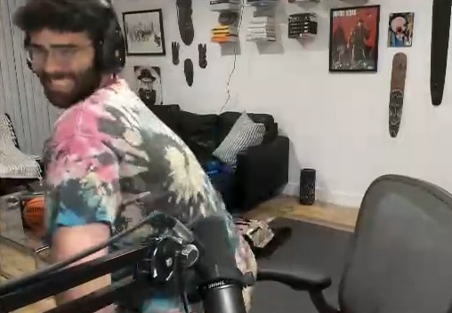
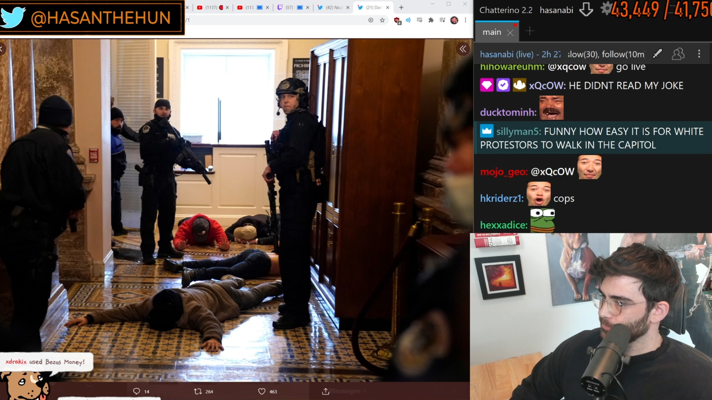
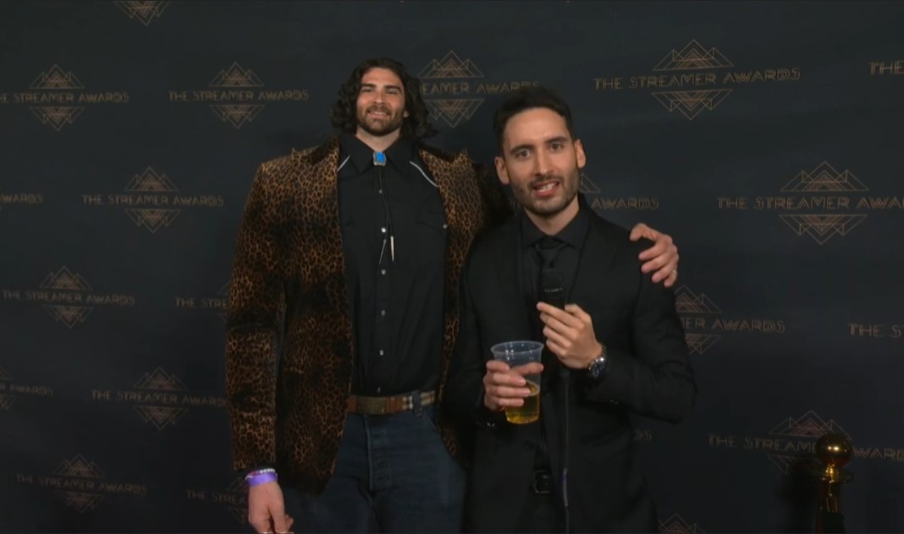
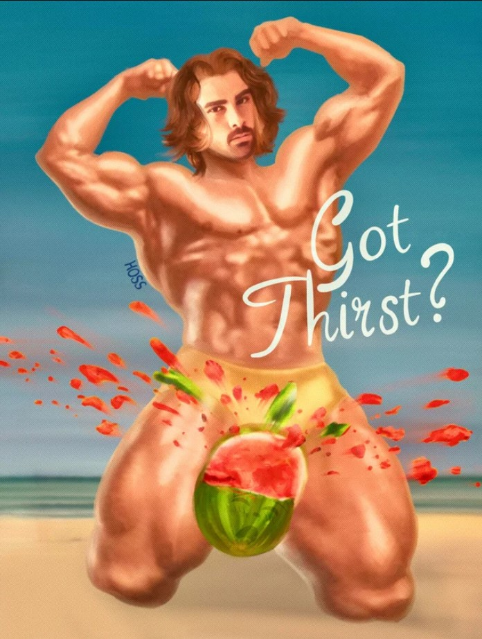

Hasan Piker
A "champagne socialist"

Hasanabi in his natural state.
About Hasan
Hasan Doğan Piker, more widely known as Hasanabi, is a Turkish American content creator and political commentator. He discusses news/politics and sometimes streams games on Twitch.
Timeline of Hasan's life
- 1991 Jul - born in New Jersey, raised in Turkey
- 2013 - graduated from Rutgers University with a double major in political science and communication studies
- 2016 - created and hosted The Breakdown, a TYT Network series that gave left-learning political commentary

- 2016 - 2018 - wrote political content for HuffPost
- 2018 Mar - started streaming casually on Twitch
- 2019 Aug - created and hosted Agitprop with Hasan Piker, another TYT series
- 2020 Jan - left TYT and intention to become a full-time Twitch streamer
- 2020 Mar - throws it back 
- 2020 Oct - played Among Us with AOC
- 2021 Jan - reached new peak viewership of 231K viewers during the US Capitol attack 
- 2021 Aug - bought a $2.7 million house in Hollywood
- 2021 Dec - banned on Twitch for using the c-word
- 2022 Feb - nominated for "Best Just Chatting Streamer" for The Streamer Awards 
- 2022 May - crushed watermelon with big juicy thighs

Art by u/HossOnReddit
All information was gathered from Wikipedia. For addition information, please visit Hasan Piker's Wikipedia page.